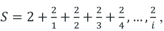
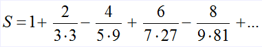

|
Задача 1. Составить программу вывода 10 целых чисел на экран.
Задача 2. Вычислить сумму ряда S = 1+1.5+2+2.5+3+3.5+…+ 30.
Задача 3. Вычислить сумму ряда
(решить самостоятельно)

, с точностью e = 0,1.
Задача 4. Мой богатый дядюшка подарил мне один
рубль в мой первый
день рождения. В
каждый день рождения он удваивал свой подарок и прибавлял к нему
столько рублей, сколько лет мне исполнилось. Написать программу,
указывающую, к
какому дню рождения подарок превысит 100руб.
Задача 5. Вычислить сумму элементов следующей
последовательности с точностью 0,001:
Найти сумму элементов последовательности с точностью 0,001
- (решить самостоятельно)

Результат: S = 1.157
Задача 5a. Найти сумму и количество элементов
последовательности, которые по модулю больше 0.001.
Последовательность: S = 1/2 - 2/4 + 3/8 - 4/16 + ... - ...
(решаем в классе с группой)
Задача 6. Вывести все квадраты натуральных чисел, не
превосходящие данного числа N.
Пример: N=50 | 1 4 9 16 25 36 49
Задача 7. Написать программу, в результате выполнения
которой выяснится, входит ли цифра 2 в запись данного целого
числа n.
Пример: 365842.
Задача 8. Составить программу вывода всех натуральных
чисел, меньших n, квадрат суммы цифр которых равен заданному
числу m.
Пример: 21 и 4, искомые числа 2,11,20.
Задача 9. Пользователь вводит целые числа. Пока он не
введёт число большее 15, в ответ на каждое введённое число
выводите сумму этого числа и числа 7, если же введённое число
больше 15, то цикл необходимо завершить.
Задача 10. Пользователь вводит целые числа. Пока он не
введёт число большее 15, в ответ на каждое введённое число
выводите сумму этого числа и предыдущего введённого им числа,
если же введённое число больше 15, то цикл необходимо завершить,
не выводя в ответ сумму.
Первое введенное пользователем число можно сложить с единицей.
Задача 11. Выведите на экран, все нечетные числа,
делящиеся на 3 нацело, лежащие в диапазоне от 35 до 117.
Задача 12. Выведите на экран, все четные числа от
35 до 117 и нечетные числа, лежащие в диапазоне от 45 до 99.
Указание: сначала можно решить задачу двумя циклами, но потом
перепишите с использованием одного цикла, в теле которого
составьте логическое выражение, описывающее подходящие числа
(используйте логические операции).
Задача 13. Пользователь вводит целые числа. Пока
он не введёт число большее 15, в ответ на каждое введённое число
выводите сумму этого числа и двух предыдущих введённых им чисел
(предыдущего и пред - предыдущего), если же введённое число
больше 15, то цикл необходимо завершить.
В первом витке цикла все "предыдущие" числа можно считать
единицами.
Задача 14. Пользователь вводит целые числа. Пока
он не введёт число большее 15.
Если очередное введенное число является чётным, то в ответ
водите сумму этого числа и пред - предыдущего введённого
пользователем числа, иначе просто запрашивать новое число. Если
же введённое число больше 15, то цикл необходимо завершить.
В первом витке цикла все "предыдущие" числа можно считать
единицами.
Задача 15. Пользователь вводит целые числа в
цикле (разные: четные, нечетные, положительные, отрицательные в
любом порядке и количестве). Считайте и выведите на экран
значения первых трех отрицательных нечетных чисел. После чего
завершите цикл.
Задача 16. Пользователь вводит последовательно
три произвольных целых числа. Заведите три переменных и
сохраните эти числа в эти переменные. Пользовательский ввод
обрабатывайте в цикле.
|